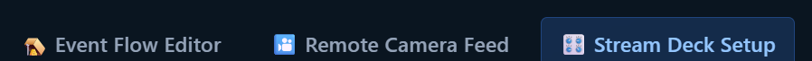
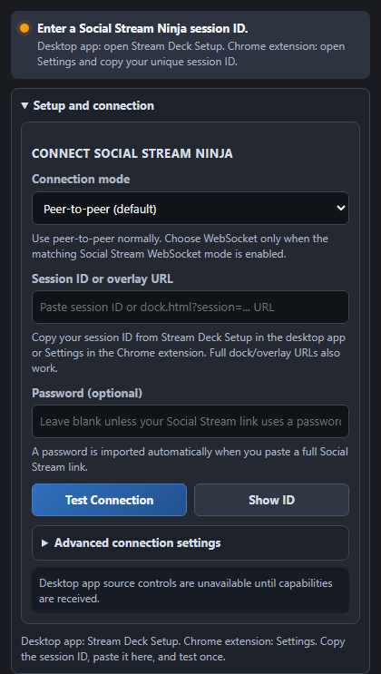

Налаштування Stream Deck
Підключіть Stream Deck до Social Stream Ninja за кілька хвилин.
Українська
Використовуєте розширення Chrome? Скопіюйте свій унікальний ID сесії з Settings і вставте в плагін.
Деталі програми
Отримати плагін
Завантажте файл .streamDeckPlugin з останнього випуску та відкрийте його для встановлення в програмі Stream Deck.
Завантажити плагінПерегляньте 2-хвилинний огляд
Що може робити плагін і як його налаштувати крок за кроком.
Підключіть свій сеанс один раз
Копіювати ID
Використовуйте Копіювати ідентифікатор вище або скопіюйте його з налаштувань розширення Chrome.
Додати налаштування
У програмі Stream Deck перетягніть дію Social Stream Ninja Setup на клавішу.
Вставте й перевірте
Вставте ідентифікатор у налаштування та виберіть Перевірити з’єднання. Ключ показує Online, коли він працює.
Продовжуйте працювати SSApp або розширення. Після підключення додайте клавіші попередньо встановлених команд; усі вони поділяють цей зв’язок.
Два місця, з якими ви працюватимете


Керування, зручне під час трансляції наживо
Команди адаптуються до того, що підтримує ваш SSApp або розширення. Елементи керування джерелом потребують SSApp; циферблати потрібні Stream Deck +.
Елементи керування та усунення несправностей · Власні сценарії Event Flow
Зберігайте свій ідентифікатор сеансу та пароль в таємниці. Сховайте їх, перш ніж ділитися знімками екрана.